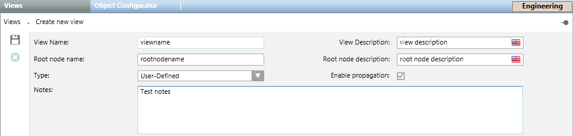

Views Configuration Workspace
In Engineering mode, when you select the main Views root or any object under it, the Views tab displays. Here you can create new views or delete existing views. To a limited extent, you can also modify the settings of existing views.

Views Configuration Parameters
View Name
Lets you specify the view name as it displays under the Views folder. Space between words is not allowed. Once you created a view, this field is no longer available for editing.
View Description
Lets you specify the view description as it displays under the Views folder and in the System Browser drop-down list. Space between words is allowed. You can modify the text in this field.
Root node name
Lets you specify the view root name that displays in System Browser when a user selects the current view, and then selects Show Name. Space between words is not allowed. Once you created a view, this field is no longer available for a editing.
Root node description
Lets you specify the view root description that displays in System Browser when a user selects the current view, and then selects Show Description. Space between words is allowed. Once you created a view, this field is no longer available for a editing.
Type
Lets you specify the view type (Logical, Physical, or User-Defined). With the exception of user-defined views, once a view type has been configured, it is removed from the list. Once you created a view, this field is no longer available for editing.
Enable propagation
Lets you specify whether the state of the objects is propagated from the child nodes to the parent nodes in the view.
Notes
Lets you enter comments or remarks for a view. This field is optional and limited to 255 characters.
Views Toolbar Controls
| Selection in System Browser [Engineering mode] | |
Views object | Views folder | |
Delete | Delete the currently selected view. (You cannot delete the following views: Management View or Application View.) | n.a. |
Save | Save the changes made to the current view. | Create a new view object. |